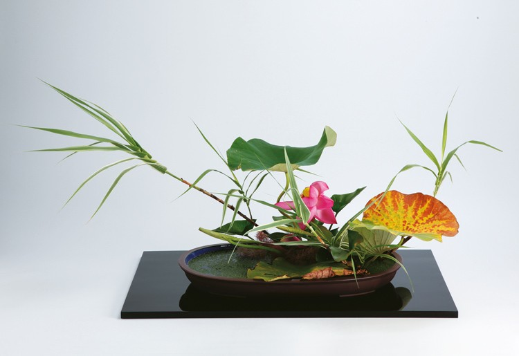
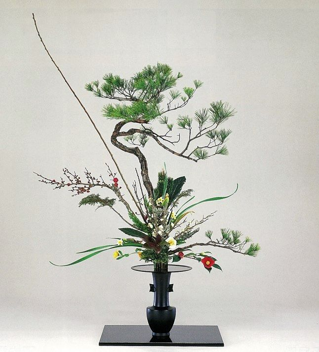
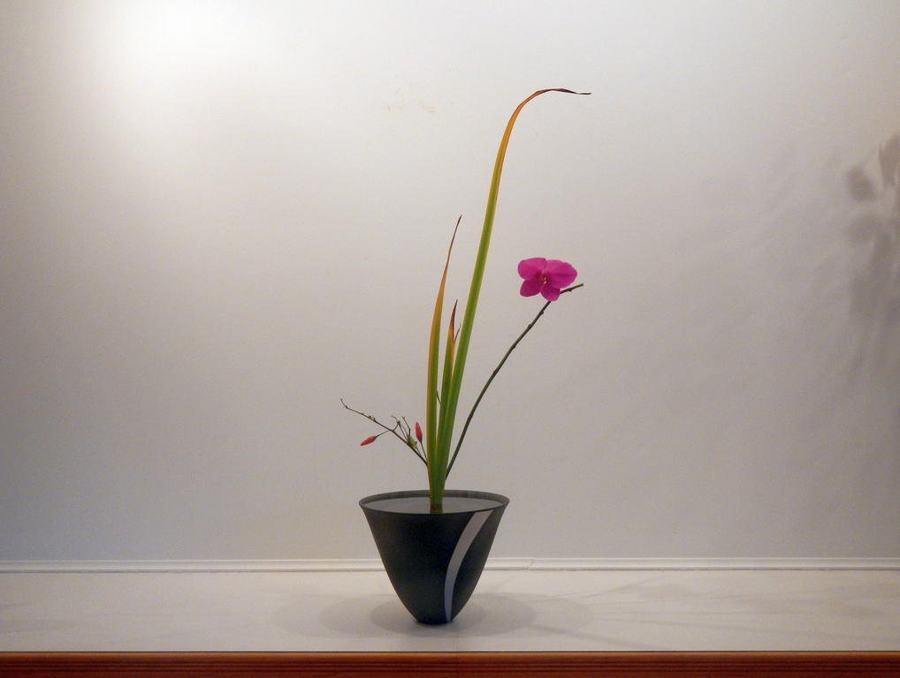
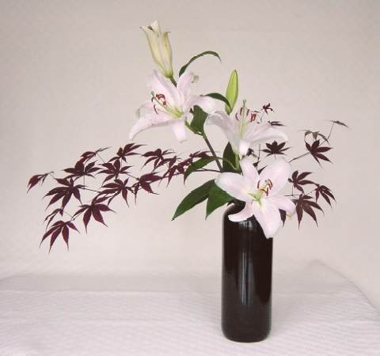
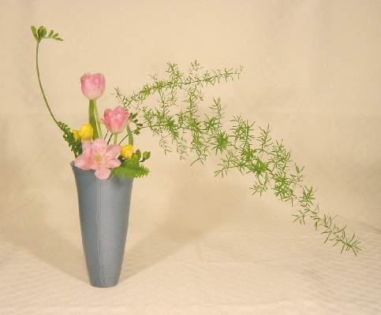
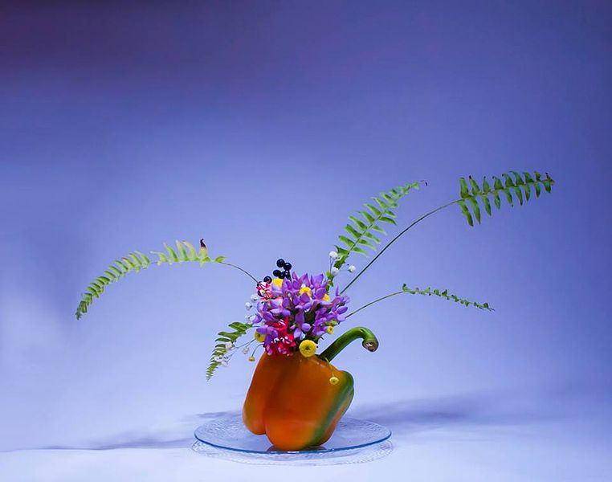

V preklade "žijúce kvetiny", ikebana je jponské umenie aranžovania kvetov. Je taktiež známe ako "kadou" čo znamená "cesta kvetov". Umenie vzniklo v 7 storočí, kedy boli kvety ukladané na pamätníky a oltáre. Neskôr ich mali ľudia bežne v dome. Najviac sa umenie ikebana rozšírilo v 16-tom storočí, kedy vznikali aj školy so špecializáciou na umenie ikebany. Je to taktiež brané ako 1 z 3 základných umení dokonalosti. Umenie je prevzaté od čínsky budhistických mníchov a jeho teória spočíva v staraní sa o kvetinu, formovanie jej života, na základe čoho sa vyberajú aj vhodné vázy.

Tipy a spôsoby aranžovania kvetov
Spôsoby ako aranžovať kvety sa neustále vyvíjajú, a za tie mnohé roky ich vzniklo nespočetne veľa. Na začiatku bolo umenie ikebany jednoduché, tvorené len z niekoľkých kvetov a zelených listov. Prvá podoba ikebany mala názov "kuge". Štýly ikebany sa začali meniť na konci 15. storočia na formu umenia s pravidlami. Najstaršia kniha má názov "Sedensho" a píše sa v nej o ikebanách za rozmedzie rokov 1443 - 1536. Prvé štýly boli charakterizované vysokým stredným kvetom, nasledujúcim dvoma menšími kvetmi po bokoch rastliny. Takýto štýl sa používal v hradoch a zámkoch ako dekorácia.

Rikka štýl
Doslova znamená "stojace kvetiny", vymyslený budhistami ako vyjadrenie krásy tvarov prírody. Základom je 9 vetiev, ktoré reprezentujú elementy prírody.

Shōka štýl
Znamená "čisté kvetiny", pozostáva len z 3 častí, ten (nebo), chi (zem) jin (človek). Je to veľmi jednoduchý štýl, navrhnutý aby ukázal krásu a jedinečnosť kvetiny.

Nageirebana štýl
Znamenajúci "hodené kvetiny", má neštrukturalizovaný dizajn. Zväčša je charakterizovaný úzkym zväzkom stebiel, ktoré sú usporiadané do trojuholníkovitého tvaru, čo sa považuje za klasický prejav tohoto štýlu.

Moribana štýl
Znamenajúci "nahromadené kvetiny", kvetiny sú naarandžované v plytkej váze alebo "suiban" (niekedy aj v košíku) a aby nevypadli tak sú pripevnené o ihlice.

Jiyūka štýl
Tento štýl znamená "voľné kvetiny". Je charakteristický kreatívnym dizajnom, to znamená že sa kvety môžu arandžovať akokoľvek a je dovolené používať všetky formy materiálu.